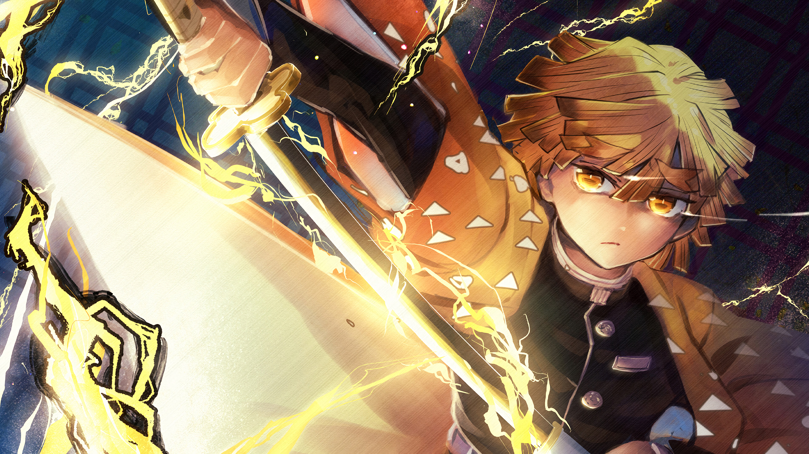
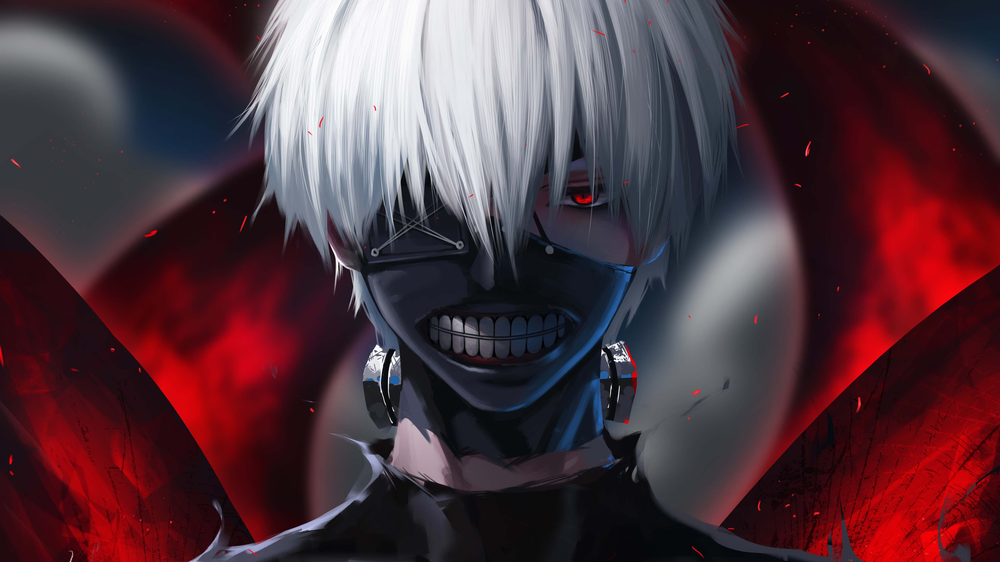
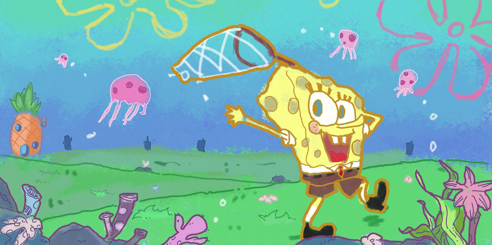
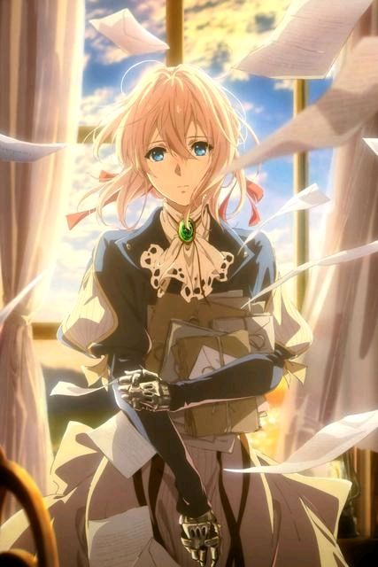
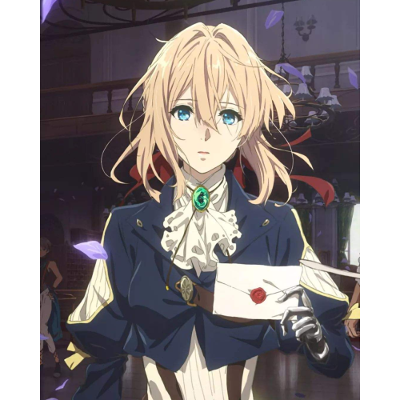
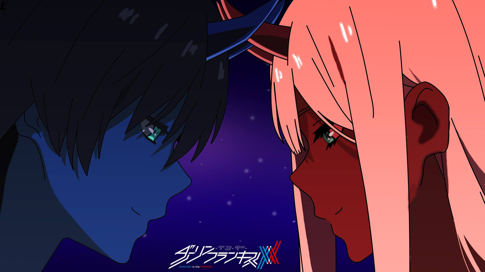

我们是不会分开的，对吗?我们还要一起走很远很远的路度过好久好久的时光。然后等
你找到家人了，我们就拉上好多好多朋友，把这些事全讲给你家人听。
欢迎来到
我の二次元
Animation and comic(动漫)
天马行空的动漫，给了看动漫的人无尽的想象空间。可能是一个有趣的故事,可能是为了目标不懈 努力的一群人，也可能是与命运抗争，-往无前的孤胆英雄。跟这些人物交流，给自己的生活增添 色彩。
Game(游戏)
据艾瑞网发布的《2021年中国二次元产业研究报告》显示,进入到2022年，中国 泛二次元用户规模将会达到4.8亿人，这意味着二次元市场的人口红利仍旧巨大。比如近期《原神》联动必胜客的活动，通过一系列早期的预热，二者的联动复刻了 此前的“异世相遇，尽享美味”，再次调动起了线上线下诸多用户的情绪。
Noval(小说)
网文+二次元推进商业合作模式升级 《斗破苍穹》动画制作精良，点击突破10亿，除了标志国产动画技术跻身国际一流水平，成熟的工 业化流程和商业模式带动国产动画升级。网络文学聚力粉丝经济，以优质内容为突破口，带动文创行业 发展的特质显露无疑。
二
次元一词原意为二维空间次元是一个平面媒体所表达的异次元
二次元也被称为"ACGN/ACG"是"Animation" (动画)、"Comic" (漫画)、"Game” (游戏)、"Novel” (小说) 这几个英文字母缩写的统称,就是指代主要以动画、漫画以及游戏(以日本动漫游戏为主) , 次要的辅助于小说(轻小说)构成的一种虚拟世界
“二次元”.被众多商家所追逐，已经成为一个非常成熟完整的文化产业链，漫画、小说可改 编成动画，进而再推出游戏，游戏可改编成动漫、小说甚至延伸至舞台剧、cosplay、 "同人活动”、 电影(电影《爵迹》就是一个典型)等等。腾讯于2015年11月正式提出"二次元经济”，标志着其作为 一种产业开始运做起来。究其原因，还是因为作为几种艺术形式的结合体，”二次元”文化在中国一经 传播，就受到以90后为代表的青少年极力追捧,热情高涨，带动了"二次元”以吸相关产业(手办衍生 产品、主题公园等)的发展。
“二次元”.被众多商家所追逐，已经成为一个非常成熟完整的文化产业链，漫画、小说可改 编成动画，进而再推出游戏，游戏可改编成动漫、小说甚至延伸至舞台剧、cosplay、 "同人活动”、 电影(电影《爵迹》就是一个典型)等等。腾讯于2015年11月正式提出"二次元经济”，标志着其作为 一种产业开始运做起来。究其原因，还是因为作为几种艺术形式的结合体，”二次元”文化在中国一经 传播，就受到以90后为代表的青少年极力追捧,热情高涨，带动了"二次元”以吸相关产业(手办衍生 产品、主题公园等)的发展。
我想，我们正是在伤害与被伤害的循环往复中，渐渐变得温柔起来的。
如果我闭上了双眼，看到的是黑暗的话，那么当我睁开眼睛去看这个世界的时候，否会是
一片光明
真或假，不取决你的眼,而取决你的心。
从你的前前前世开始，我就在寻觅你的踪迹。
经典语录：
-

原神：
若你困于无风之地，我将唱响高天之歌。 当你重新踏上旅途之后，一定要记得旅途本身的意义。终点并不意味着一切， 在抵达终点之前，用你 的眼睛，多多观察这个世界吧。勇气不也是这样吗?一帆风顺的人不会明白它的可贵，可当你身处绝境勇气就是令你 奋起抗争、走出绝境的唯一之光。 -

鬼灭之刃：
就算被自己的弱小无助击垮，你也要咬紧牙关燃起斗志向前迈进。即使停下脚步蜷缩身体, 时间也不会等你，不会与你共担悲伤。所有登峰造极之人最终都会抵达同一个终点，哪怕时代变迁，哪怕所经历的路途千差万别， 他们最终都会抵达同样的终点。 -

东京喰种：
要诅咒，就诅咒弱小的自己好了。这个世界上所有不利条件都是因为当事人能力不足所致。 没有光明是不幸的吗?需要光明才是真正的不幸。就算看不到未来也罢，我们紧握着双手真的真的很温暖哦。 -

海绵宝宝：
派大星:“嗨, 海绵宝宝,我们去抓水母吧。 ” 海绵宝宝:“不行，我今天要去上班。” “可是，如果你不在家那我做些什么呢?” “我不知道，平时我不在的时候你都做什么呢? 等你回来。
《紫罗兰永恒花园》
花无凋零之日，意无传递之时，爱情亘古不变,紫罗兰与世长存。这个世界上爱有很多种，我们或多或少都“尚未真正知晓”
这个世界上，没有不需要寄到的信。
国家队
机甲为婚纱，银河为殿堂，爆炸为礼炮，见证了只属于他们的婚礼。樱花树下，再续前缘，鹤望兰无凋零之时，比翼鸟永世长存。


